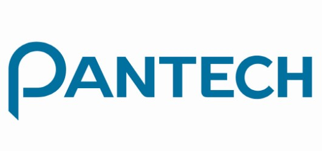
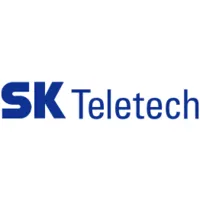

MrJino
MrJinoSOFTWARE ENGINEER · NOH JINIL
기술을 넘어,
사람에게 닿는
경험을 만듭니다.
21년째 개발을 즐기고 공부하며 살아가는 개발자입니다.
기존 기술에 갇혀있지 않고 언제나 새로운 기술을 학습하고 적용하여 코드 품질 향상 및 안정된 서비스 구현을 지향합니다. 모르는것에 대해 부끄러워하지 않으며 누구에게나 항상 배우는 자세로 대합니다. 개발 이전에 요구사항 검토, 적용 기술 검토, 개발 문서 작성을 반드시 진행하고 Jira (Sprint 프로젝트 계획), Confluence (프로젝트 문서정리), Git (소스 히스토리 정리) 를 적극적으로 활용합니다.
01 / SELECTED WORK
경험으로 남은 프로젝트.
일상의 작은 편의부터 서비스의 시작까지.
직접 참여하고 만들어 온 작업들입니다.
회사 프로젝트12 PROJECTS
개인 프로젝트3 PROJECTS
02 / EXPERIENCE
꾸준히 쌓아 온
개발의 시간.
플랫폼과 제품은 달라져도,
더 나은 사용 경험을 향한 방향은 같습니다.
2003 —
2023.01 ~ 2026.12 (3년)
스마트스코어
네이티브팀 책임연구원
- Android 골프장 태블릿앱내 신규기능 개발
- iOS/Android 골프사용자용 하이브리드 웹앱 개발
- Windows 키오스크 기기관리 애플리케이션 개발
2019.07 ~ 2022.12 (3년 6개월)
폴리엇
기술연구소 수석연구원/팀장
- 법인창업멤버 (대표 1인, 개발자 2인)
- 현대차 스마트워치앱개발 SI 프로젝트 리딩
- 보이스캐디 워치연동 모바일앱 SI 프로젝트 리딩
2017.02 ~ 2019.06 (2년 4개월)
드림어스컴퍼니(아이리버)
SW개발팀 책임연구원
- SKT FLO 서비스런칭 프로젝트 참여
- Android FLO 뮤직스트리밍 앱 개발
- Astell&Kern기기용 뮤직스트리밍 앱 개발
2006.01 ~ 2016.06 (10년 6개월)

팬택
SW개발팀 선임연구원
- SKY 핸드폰 탑재 소프트웨어 개발
- Android 기반 뮤직플레이어 기능개선및 유지보수
- SKT 부가서비스 포팅 및 오류수정
2003.01 ~ 2005.12 (3년)

SK텔레텍
SW개발팀 연구원
- SKY 핸드폰 탑재 소프트웨어 개발
- RTSP/RTP 기반 동영상 스트리밍 솔루션 개발 (H.263)
- 정통부규격 WIPI 플랫폼 포팅
1996.03 ~ 2003.02
건국대학교(서울)
컴퓨터공학 졸업
- 정보시스템감리사 (2016.07)
- 정보처리기사 (2002.09)
03 / HOW I WORK
좋은 코드는 함께 만듭니다.
명확하게 소통하고, 구조적으로 생각하며,
배움을 멈추지 않습니다.
서로 이해할 수 있는 언어
개발팀 사이에서는 시퀀스 다이어그램과 아키텍처 도면으로, 기획자·디자이너와는 비개발자의 언어로 소통합니다. 운영 현장과 고객의 입장을 먼저 이해합니다.
COMMUNICATION기록이 만드는 협업
요구사항과 적용 기술을 검토하고 설계를 문서로 남깁니다. Jira 타임라인과 스프린트, Git 코드 리뷰, Confluence 문서화로 팀이 같은 방향을 보게 합니다.
COLLABORATION계속 배우는 개발자
프로젝트 규모에 맞는 Clean Architecture와 명확한 UML 설계를 지향합니다. 익숙한 기술에 머무르지 않고 동료와 새로운 기술에서 배우며 품질과 안정성을 개선합니다.
CRAFT & GROWTH04 / GET IN TOUCH
다음 이야기를
함께 시작해 볼까요?
프로젝트와 기술, 함께 일하는 방식에 대한 이야기를 기다립니다.